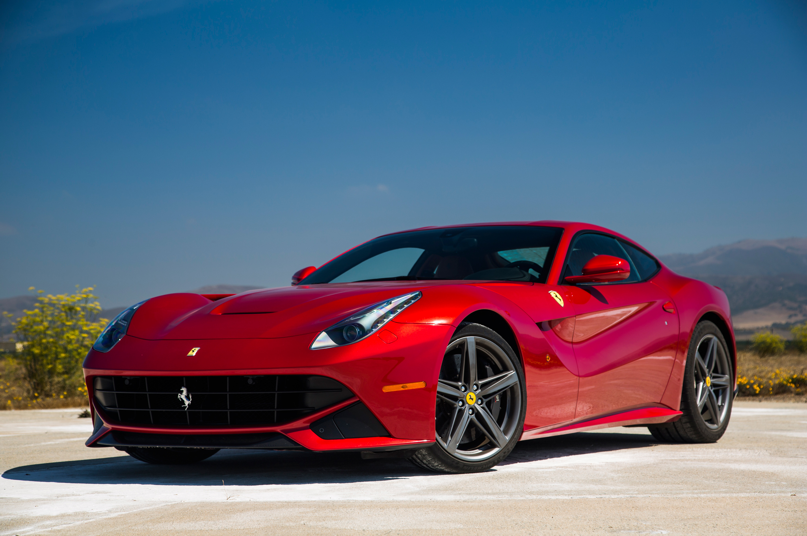
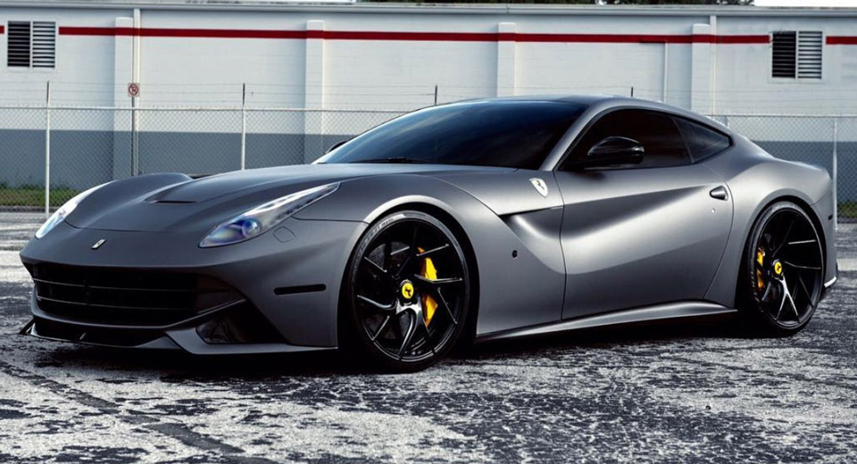

.jpeg)
Ferrari F12berlinetta(còn được gọi là F12 Berlinetta hay F12), và được trang trí không chính thức như F12B ) là một chiếc du thuyền cỡ lớn phía trước, sản xuất bởi nhà sản xuất xe thể thao Ferrari . F12berlinetta, ra mắt tại Geneva Motor Show 2012, thay thế cho các tour du lịch 599 series. Động cơ Ferrari V12 6,3 lít hút trong động cơ F12berlinetta đã giành Giải thưởng Động cơ Quốc tế năm của năm 2013 trong hạng mục Hiệu suất Tốt nhất và Động cơ Lớn nhất trên 4,0 lít. F12berlinetta được đặt tên là "Siêu xe của năm 2012" của tạp chí xe Top Gear . Vào năm 2014 nó đã được trao giải thưởng Premio Compasso d'oro ADI XXIII. Chấp nhận giải thưởng là Phó Chủ tịch Thiết kế của Ferrari, Flavio Manzoni.
Chiếc F12berlinetta sử dụng động cơ 65 ° V12 652 V12 của công ty Ferrari F140 với công suất 6.262 cc (382 Cali). Công suất của động cơ được chia sẻ với FF , nhưng phiên bản F140 FC được lắp đặt trên F12 tạo ra 740 PS (544 kW, 730 mã lực) ở vòng quay 8250 vòng / phút và momen xoắn 690 Nm (509 lb-ft) ở tốc độ 6.000 rpm, làm cho nó trở thành chiếc xe đường phố Ferrari mạnh thứ tư cho đến nay, chỉ vượt qua LaFerrari , F12tdf, và 812 Superfast . Điều này cho phép F12berlinetta tăng tốc từ 0 lên 100 km / h trong một giây báo cáo chính thức là 3,1 giây, tốc độ từ 0 đến 200 km / h trong 8,5 giây và tốc độ tối đa 211 mph (340 km / h) ). Động cơ của F12berlinetta đã được thiết kế hiệu quả hơn so với động cơ 599 , cũng như mạnh mẽ hơn. Hệ thống quản lý động cơ được trang bị hệ thống bắt đầu HELE của Ferrari để giảm tiêu thụ nhiên liệu khi chạy không tải. Ferrari báo cáo rằng chiếc F12berlinetta có thể đạt được 18 mpg (15.7 L / 100 km, 15.0 mpg -US ) - cải tiến 30% so với 599 - và phát ra khí thải CO 2 là 350 g / km.
F12berlinetta được xây dựng xung quanh khung khung nhôm không gian cùng với Scaglietti . Chassis được làm từ 12 hợp kim nhôm khác nhau và cải thiện độ cứng cấu trúc lên 20% so với 599, trong khi giảm trọng lượng 70 kg (150 lb). Trọng tâm của trọng lực đã được hạ xuống khoảng 25 mm (1 inch). Trọng lượng phân phối của F12berlinetta là 48% phía trước, 52% phía sau. Tương tự như các mẫu Ferrari khác, F12berlinetta sử dụng hệ thống phanh đĩa carbon CCM3 thế hệ thứ ba của Ferrari với hệ thống treo khí nén ABS , SCM-E, điều khiển độ ổn định điện tử LSD , ESP Premium và điều khiển lực F1-Trac. Sự ổn định và kiểm soát lực kéo, hệ thống treo và các thiết lập khác của xe được điều khiển bằng tay quay Manettino gắn trên tay lái.
F12berlinetta được trang bị lốp xe thể thao Michelin Pilot Super Sport, với mã số lốp 255/35 ZR20 (trên bánh xe 20 "× 9.5J) ở phía trước và 315/35 ZR20 (trên bánh xe 20" × 11.5J) ở phía sau.
.jpeg)
Ferrari báo cáo rằng F12berlinetta có khả năng lấp mạch thử nghiệm Fiorano trong 1 phút, 23 giây; ba giây chậm hơn so với LaFerrari , nhanh hơn gấp đôi so với chiếc 599 GTO , nhanh hơn hai giây so với Enzo , nhanh hơn hai giây so với chiếc 458 Italia , nhanh hơn ba lần 430 Scuderia và ba giây rưỡi nhanh hơn chiếc 599 GTB. Ferrari F12berlinetta có trọng lượng 2,2 kg (4,85 lb) trên mỗi mã lực , phù hợp với tỷ lệ sức mạnh và trọng lượng của chiếc 488 GTB của Ferrari.